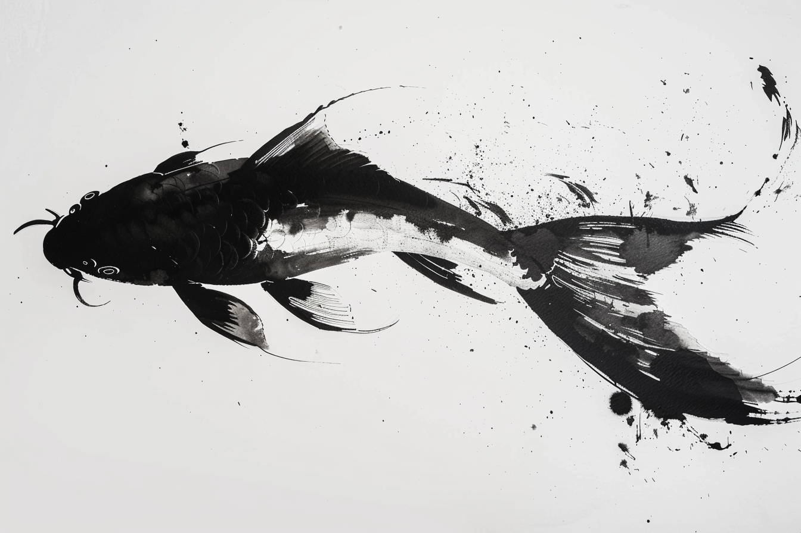
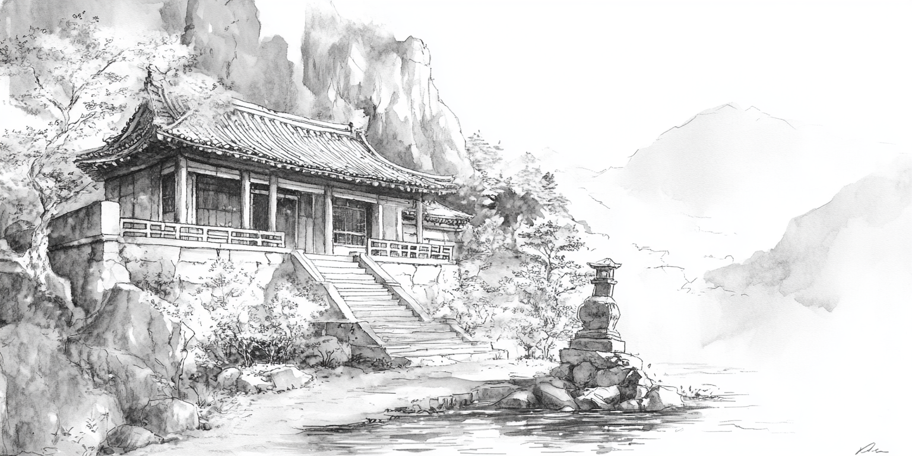
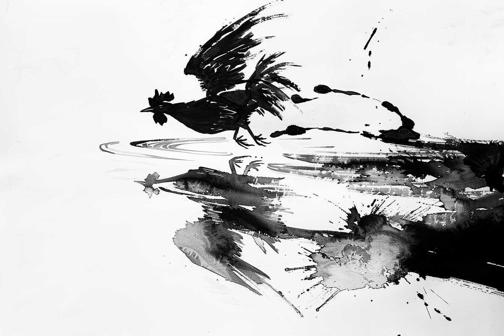
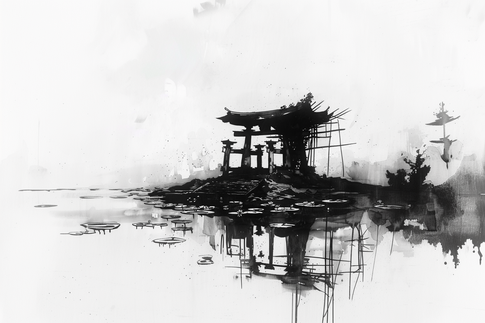
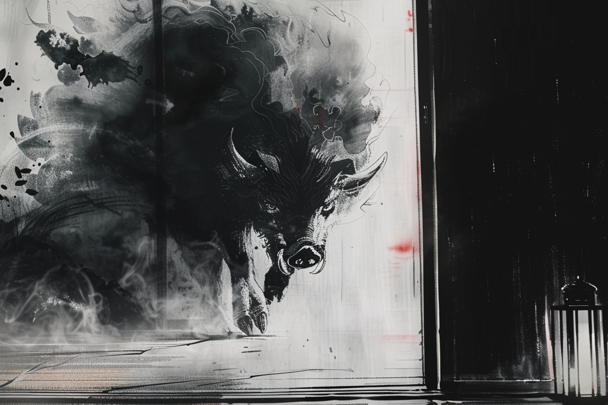
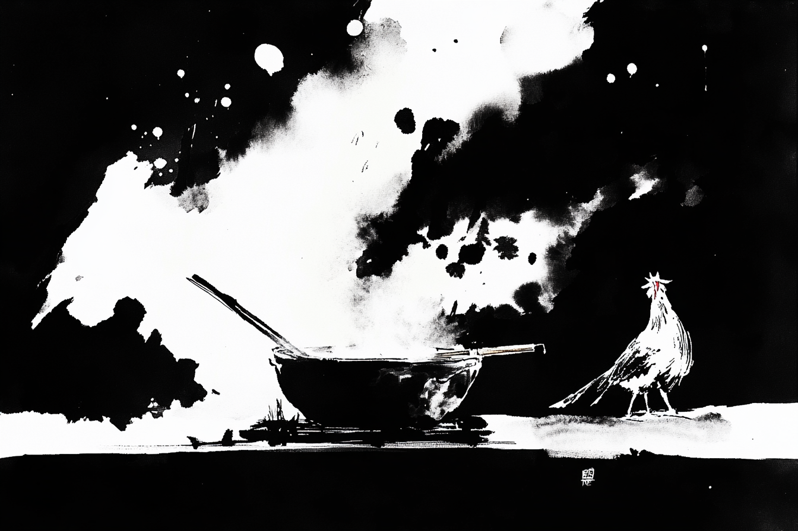

В одной горной деревне... Впрочем это вы уже знаете. Тринадцать лет назад дедушка Рю принес меня в деревню, и, во исполнение опрометчивого обещания, заставил каждого из крестьян учить мальчика Ямито словно собственное дитя. А моего дядю, который попал в страну мертвых, в тот же год назначили настоятелем к нам в храм.
Если вы не знаете историю нашей деревни, вам это может показаться странным — как так, померший монах может быть настоятелем в храме? Он же, ну, помер? Во-первых, не совсем и помер. А во-вторых, тут сходу не разберешься. Но уж вы мне поверьте, в нашем храме настоятель он как бы с той стороны. Ну, вроде как, у вас дом разгорожен фусума, и с одной стороны женская половина, с другой мужская. Только в случае с нашим храмом одна половина для живых, а вторая для мертвых. А мне, вот удача, можно ходить туда-сюда, ведь у меня всюду родственники.
Кстати, я забыл представиться. Меня зовут Ямито. Тот самый мальчик, которого учат всей деревней. И учат, и учат! Как охотиться. Как рис сажать. Как рыбу ловить. Как бумагу делать. Это вот особенно нудно. И еще массе всякой ерунды. Интересные занятия у меня тоже бывают. Во-первых, я люблю ходить в храм к моему дяде Вэйджиро. Он учит меня законам подземной префектуры. Это страна мертвых, если что. Ну, не вся страна мертвых, а та ее часть, что рядом с нашей деревней. Там как раз служит и дядя Вэйджиро, и два его брата: мой отец, и дядя Пэйтаро. А за главного в префектуре мой прадед: управляет префектурой, которая занимается делами неупокоенных. Ну а меня, значит, учат законам этой канцелярии, какие духи бывают и как их распознать. И очень здорово, что учат, а то я бы сегодня, может, и не вернулся бы домой совсем.
Дело было так. Утром я сказал Харуко, что сегодня у меня будут уроки счета и к ней на урок я не приду. Харуко учит меня разведению карпов. А урокам счета меня учит Ёсими. Она жена нашего старосты, и рассказывает про все, что надо знать для управления деревней. Календарю лунному, как налоги считать, как торговаться, как людей на место ставить. Ну и как считать. Она вообще хорошая, Ёсими, а еще кормит после уроков вкуснее всех. Сегодня у меня уроки счета были, но не с ней. Так что я, получается, и не наврал Харуко. Врать нельзя. Если мёкан врать будет, он ни с одним юрей не справится. Так что я и не вру. А что Харуко подумала, что я пойду к Есими, ну это она сама так решила, не я.
В общем, сегодня утром я ушел в город. До него не так и близко, но мы с Райдзином успели. Город внизу, в долине, и добежать можно часа за два. Райдзином зовут моего бойцового петуха, а уроки счета у меня правда были, ведь чтобы выиграть на ставках в петушиных боях, нужно хорошо считать.
Ставки правильно делать меня научил дядя Пэйтаро. Вот уж у кого я учится люблю! Он меня учит как быстро залезть на крышу, как драться посохом, или вот как тренировать Райдзина. Правда, ему не нравится, как я петуха назвал. Говорит, не почтительно это, называть курицу именем бога грома. А почему непочтительно, если он опять всех уделал? Наоборот, может, я так настоящему Райдзину почести выказываю.
В этот раз в турнире мы выступили удачно, но продлился он дольше, чем я думал. Вот так и получилось, что мы с Райдзином вовремя домой не успели. Обратно в деревню надо всю дорогу в гору лезть, это и так дело не быстрое, а когда мы вышли, уже темнеть начало. Честно сказать, стоило бы в городе заночевать, но я не хотел объясняться с Ёсими, и поэтому решил, что как-нибудь успею. Как говорит дядя Пэйтаро: «Думал барсук, что он обезьяна, да лоб расшиб».
В общем, не успели мы домой. Полдороги прошли, и совсем темно стало. А дальше надо или по дороге идти, но это крюк больше пяти ри. Или по прямой, через лес. Но это днем я через лес могу пробежать. А ночью в гору лезть в темноте среди бурелома, это костей не соберешь. Ну и решил я, что хорошая идея переночевать, а утром вернуться в деревню. И как-нибудь так незаметно придти домой, чтобы ни Харуко, ни Ёсими нас с Райдзином не заметили. Как раз под горой есть заброшенные ворота, рядом со старой пристанью. Развалились они почти, не знаю почему их префектура не починит. Но — хоть какая-то крыша над головой.
Вот подхожу я к воротам, и вижу, что не только мне в голову идея переночевать тут пришла. Стоит под воротами кто-то, в кимоно одет белое, на луну смотрит. Ну, думаю, надо подойти поздороваться, и может костер попросить разжечь, а то холодно уже, осень. Сегодня ночь и вовсе зябкая. А у меня огнива нет.
Иду, думаю с чего разговор начать, и тут Райдзин начинает вырываться. Он у меня умный, и обычно когда мы с ним из города идем сидит смирно. Сегодня он и вовсе довольный был, мы с ним заработали, я его накормил. Чего, думаю, ему беспокоится? Может холодно ему стало?
В общем из-за Райдзина-то я и спасся. Пока я с ним разбирался, пока успокаивал, получше успел присмотреться. Смотрю, а незнакомец в белом ко мне идет. И вроде и не торопиться, а уже почти рядом он. И холодно совсем стало.
Тут Райдзин как завопит, и меня как стукнуло: раскрой глаза, Ямито, деревенский ты дурень, чему тебя учили?! Это же юрэй! Космы его черные по ветру плывут, колышутся, руки свои длиннющие ко мне тянет. И так он уже близко, что видно, и как ногти у него отрасли, и что кимоно у него заляпано синим чем-то. Тут я заорал и побежал что есть мочи, а он за мной. Ну я, не будь дурак, в два прыжка доскочил до пристани, и оттуда прямо в воду сиганул. Юрей, они через проточную воду не могут. В общем вынырнул на середине реки, Райдзин хрипит, плюется, на неблагодарную сволочь хозяина орет. Он меня от верной смерти спас, а я его чуть не утопил.
Стоим мы с ним все мокрые, а на берегу юрей колышится. Тут я его уже спокойненько разглядел и все детали в кучку сложил. Получается, это у нас что? Кимоно у него богатое, хоть и заляпано чем-то. И холодно мне не потому что я мокрый, в смысле не только по этому, а это от него холод идет. Вон рядом с берегом так приморозило, что лед появился. И еще с рук у него нити какие-то тянутся, того же цвета что и пятна на рукавах. Видать это Горё. Призрак благородного господина. Он с одной стороны жуть какой сильный, а с другой с ними и договорится можно. Ну я поклонился, как и положено, и спрашиваю:
— Каким образом могу быть полезен Вам, уважаемый?
Он мне, конечно, ничего не ответил. Только потеплело вроде, и кивнул он. А после этого подлетел обратно к воротам, постоял рядом с ними и исчез. Ясное дело, к воротам я возвращаться не стал. Поднял Райдзина над головой повыше, реку перешел, и на том берегу до утра плясал, чтоб от холода не околеть.
В общем, прокуковали мы с Райдзином за речкой до первых лучей солнца. А как оно выглянуло первым краешком, так сразу ноги в руки и к деревне. Хотел я успеть вернуться, пока деревня не проснулась, да куда там. Попался я прямо на подходе к дому. Если деревню обойти сзади, а не переться через главные ворота, там есть такой овражек. Над ним баньян, за баньяном забор. Ну и ясное дело, мы с Райдзином давно организовали себе в этом заборе дыру. Райдзин через нее на луг ходит, ну и я, когда мне надо зайти или выйти, чтобы никто не видел, тоже через нее лажу.
И вот как раз, когда я аккуратненько пролезал в дыру, Мориока меня и поймал. Мориока — это охотник наш деревенский. Весь этот год он учит меня ставить ловушки на лис и барсуков, а самому в них не попадаться. Поэтому по лесу вокруг деревни надо ходить так, будто у меня глаза на спине и на пятках, а то попадешься в капкан и придется висеть, подвешенным за ногу, словно пойманный барсук. Именно это со мной и случилось: повис я на ветви баньяна, пойманный в ловушку для невнимательного ученика. Я вишу, Райдзин бегает подо мной и хохочет: «Кхо-кхо-кхо», а из-за забора не спеша выходит Мориока-сэнсэй. Низенький, в старом своем буром кимоно, и, конечно, с тыковкой саке. Подошел и, как ни в чем не бывало, уселся под баньяном. Откупорил свою бутылку, глоток сделал и сидит, жмурится, что твой котяра. Хорошо ему. Утречко, солнышко, Ямито — дурачина в ловушку поймался. Помогать выпутываться он мне, конечно, не собирался. Ну и ладно, с этим я и сам справился, ученый уже. Подтянулся, повозился с хитрыми узлами Мориоки-сэнсея, развязал их и спрыгнул.
— Доброе, — говорю, — утро, Мориоко-сэнсэй.
— У кого и доброе, а у кого и не очень. Где ты шлялся всю ночь, Ямито? В лесу с барсуками праздновал? — Тут Мориока-сэнсэй ухмыльнулся и сделал еще один глоток из своей тыквы. После этого уважительно поклонился Райдзину и говорит:
— Райдзин-сэнсэй, как же вы не доглядели?
Это у него с петухом давняя игра. Как он мне его принес, так сэнсеем и кличет. Особенно когда надо мне нагоняй сделать. Вечно делает вид, что это он с петухом советуется.
— Как же так приключилось, что урок по обходу ловушек закончился в темное время суток? Ведь так можно и какому-нибудь юрэю в лапы попасться. Что? Вы думаете, мальчик уже готов? Ну хорошо!
Мориока-сэнсэй снова ухмыльнулся, будто ему петух все про наши приключения рассказал, и продолжает:
— Мой юный охотник! Мы с уважаемым сэнсеем Райдзином посовещались, и я решил последовать его мудрому совету. Вот твоё задание на сегодня: раз ты готов к ночным вылазкам, поставь сегодня пять ловушек в лесу. Но на этот раз сделай так, чтобы они были невидимы даже для юрэя, а не только для твоего старого учителя. Если я сумею найти все, что ж, придется тебе идти в ученики к Таро-сэнсею на ближайшую неделю.
Таро-сэнсэй — это здоровенный кабан Мориоки. У него есть отдельный большущий загон, и туда никто, кроме него и Мориоки, заходить не решается. Ну если меня не считать, конечно. Потому что «идти в ученики к Таро-сэнсею» — это значит ухаживать за проклятой свиньей и всем его выводком. Та еще радость. И я уже много раз бывал в учениках у Таро-сэнсея, и мы с ним даже подружились. Поэтому я не так и испугался, хотя виду не подал. Зачем показывать, что наказание не такое и наказание? Мориока-сэнсэй сам всегда говорит: «Идешь до ветру — не вставай по ветру». Так что я принял виноватый вид, поглубже поклонился и говорю.
— Благодарю вас, Мориока-сэнсэй.
Потом, конечно, поворачиваюсь и кланяюсь еще глубже:
— Благодарю вас, Райдзин-сэнсэй. — Как-то раз я при Мариоке забыл поблагодарить петуха в таком же вот разговоре. Я потом в учениках у Таро-сэнсея два месяца проходил.
— Разрешите этому недостойному удалиться? — И стою, жду. Тут уж как всегда, Мориока будет молчать и ждать, когда Райдзин какой-то звук издаст. Типа: «Это Райдзин тут главный, я-то что, я скромный охотник». Я это давно понял, так что Райдзин у меня тренированный. Знает, что если я кланяюсь, надо быстренько закудахтать, за это потом умной птичке дадут вкусного рису. Так что Райдзин сразу и говорит:
— Кхо-кхон!
Я еще раз поклонился и пошел. Райдзин потом меня сам найдет, а мне поспать надо. Так что я потихоньку попятился, попятился да и свернул за угол, спиной вперед, пока уважаемые сэнсеи в хорошем настроении.
Зря я спиной вперед уходил: за углом я нечаянно кого-то пихнул. И не просто кого-то, а самого Камихару, который как раз нес к себе домой только что высушенный лист рисовой бумаги. Так что получилось очень и очень неудобно. Уж кто-кто, а я хорошо знаю, сколько труда уходит, чтобы один такой лист сделать. Камихара тоже мой сэнсэй. Учит меня делать бумагу и каллиграфию. Я же вам говорил, у нас тут целая деревня сэнсеев, и у них на всех один непутевый ученик — я. Своих-то детей у них нет, вот мне и достается.
В общем, испортил я Камихаре лист бумаги. Дело это скверное, так что ему даже и говорить ничего не пришлось. Камихара и вообще почти всегда молчит, а тут и подавно. Нахмурился, руки в рукава спрятал и смотрит на меня, будто я тушь, засохшая в баночке, а вовсе не любимый и единственный ученик Ямито.
Самое мерзкое — придумывать наказание себе самому. Когда я обычно совершаю ошибки или опаздываю, Камихара заставляет меня сидеть и тренировать каллиграфию. Это жутко скучно, но деваться некуда, и я терплю. Право на собственную тушечницу я пока не заработал, поэтому обычно сажусь перед прудом, и пишу иероглифы на воде. Самое сложное, что Камихара никогда не говорит, когда уже хватит. Я должен сам догадаться, насколько его устроит то, как я написал. Если я не слишком сильно провинился, мне достается что-то вроде джи — его просто писать, это просто клетка. Сиди, рисуй, главное карпу в глаз кисточкой не тыкать. Правда иногда я и над ним часами сижу. Один раз два дня пыхтел, все ждал, когда учитель подойдет и кивнет. Потом плюнул и стал просто на карпов смотреть. Посмотрел и решил, что Камихару все равно не дождусь, и надо самому у себя принять работу. Тут, кстати, самая была засада. Кто бы думал, что я такой вредный учитель для самого себя? Четыре часа с собой договаривался, прежде чем меня устроило.
Но этого всего недостаточно, для этого скверного ученика, который испортил лист мастера. Я это понимаю, Камихара это понимает, Райдзин это понимает. И если бы мне пришло в голову спросить Таро, я уверен, что он бы тоже хрюкал с полным пониманием того, насколько низко я пал. Таро вообще очень убедительно хрюкает.
В общем, стою, перебираю в голове варианты, как бы мне так себя наказать, чтобы и справедливо и не слишком долго. Может сбором козо заняться? Камихара вечно беспокоится, что до следующей зимы не хватит. Так ведь сейчас и не зима, а если козо весной собирать, в ней сока слишком много, и бумага не той плотности выходит. Напроситься ветки чистить? Это хорошее наказание, потому что реально нудное: пока листья и кору с одной вязанки сдерешь, все на свете проклянешь. У меня ни разу дольше двух часов подряд не получалось усидеть. Одна проблема, если козо начать чистить, может статься, что Камихара меня из сарая раньше, чем через месяц не выпустит, нам мнооого очищенных веток надо. А я же хочу у дяди Пэйтаро про юрей сегодня все расспросить. Так что формовку и сушку бумаги тоже откладываем. Нет, надо что-то, что я точно за сегодня закончить успею. Сложное и достаточно противное, чтобы Камихара кивнул.
Я уже почти собрался сказать Камихаре, что прошу в наказание за мой проступок позволить этому нерадивому избавить замоченные в чанах волокна от всех нежелательных примесей вручную, как он развернулся и пошел к дому. Ну и я, конечно, поплелся за ним следом.
Камихара прошел мимо чанов с щелочью, мимо сарая, где листы сушатся, и подошел к двери в каменном основании дома. Такая маленькая железная, всегда закрытая дверка. Я вообще думаю, что она и не открывается вовсе — так она мохом заросла. Но Камихара достает из рукава ключ, три раза поворачивает, и дверь открывается практически бесшумно. Будто это не старый ржавый кусок железа, а отлично смазанная новенькая дверь. Камихара от нее отходит и показывает — дескать лезь первым, Ямито. А я чего? Я со всем моим почтением кланяюсь двери, чтобы лоб не расшибить, и прохожу внутрь. Там, понятно дело, ни зги не видать — подвал, окон-то нету. А тут еще Камихара заходит и дверь за собой притворяет. Темнота становится густой как бумажная каша и черной как юрей. Вдруг все озаряется голубым светом — это фонарик со светляками, откуда-то его Камихара достал.
— Не вздумай зажигать огонь, — говорит, — в этом подвале мы храним старые рукописи.
— Конечно, — говорю, — учитель, не идиот же я!
Ну он на меня смотрит так пристально и молчит. Я понимаю, что после того, как я бумагу испортил, бахвалиться своей ловкостью и мудростью не с руки. Что еще сказать я не знаю, поэтому просто кланяюсь как можно глубже. Стою в поклоне, пока учитель не отвернется. Чтоб время зря не терять, смотрю по сторонам, что тут у нас есть есть? А есть тут полки. Много. На каждой свитки лежат. Ну, внизу точно лежат, а что выше — то мне не видно. Ну, кроме соломенных сандалий учителя. Которые, кстати, как раз развернулись, прошли к стеллажу, и перед моим носом появилась склоненная голова Камихары. Я делаю вид, что смотрю в пол, он делает вид, что не замечает, как я по сторонам смотрел, вместо того, чтобы почтение к учителю переживать.
— Ямито! — это значит, что можно из поклона вставать, — вот твое задание.
— Благодарю, сэнсэй Камихара, — выговариваю я со всем уважением. — Этот недостойный ученик принимает задание с благодарностью и постарается выполнить его наилучшим образом. И... извлечь из него урок и стать лучше. Благодарю сэнсея за мудрое руководство и наставления.
— Вот же ты, торопыга, — смеется Камихара. Смеется это хорошо, значит, он на самом деле не злиться, — ты же наставления-то не выслушал. Возьми свиток. Твой отец просил его отреставрировать. Закончи к вечеру, но смотри! Не отвлекайся, другого такого нет. И из подвала его не вздумай выносить, свет солнца на него не должен падать.
Поставил на рабочий верстак фонарик со светлячками и вышел. А я остался со светлячками, Райдзином, который как-то успел в подвал просочиться по-тихому, и работой, в которой нельзя ошибаться.
Ну я, понятно, первым делом к манускрипту. Так бы и сцапал его, если бы Райдзин меня в ногу не клюнул.
— Спасибо, Кура-сэнсэй, это я не подумал.
Нельзя же так просто грязными лапами за бумагу хвататься. Пошли мы с Райдзином к реке. Я все с себя снял, залез в реку, вымылся. Райдзин со мной мыться не пошел.
— Вот, — говорю, — Райдзин, кто не моется, тот бумагу не трогает! Не проси у меня потом кисточку, не дам!
Райдзин, конечно, никакой не каллиграф. Да и не сэнсэй, если по правде. Он петух. Просто я привык с ним и Таро болтать, когда людей рядом нет. Больше-то мне дружить не с кем. А для петуха Райдзин не только боевой и смелый, он еще и умный. Или везет мне с ним. А спасибо лишний раз сказать не переломится, как Мориока говорит.
Вымылся, растерся, поскакал по берегу, чтобы совсем не замерзнуть, высох, иду обратно в подвал. Как положено, сначала поклон, потом минуту молчу и слушаю, что мне скажет лист. Бумага, ясное дело, молчит. Чего бы она сказала-то? Она ж бумага, а не тетушка Ёсими. Просто меня так Камихара учил — надо слушать, что тебе скажет бумага, прежде чем к ней прикасаться. Он иногда по часу перед листом на коленях стоит, и слегка головой качает, прислушивается. Я однажды пробовал подольше постоять. Ничего кроме тишины не услышал. Так что минуты хватает.
Аккуратно, чтобы случайно не повредить разворачиваю свиток. От старости чернила выцвели и в полутьме подвала видно только рисунок. Бойцовый петух склонился над рекой и разглядывает свое отражение.
— Гляди, Райдзин, тут твоего брата петуха рисуют.
Райдзин глянул одним глазом и отвернулся. Ушел в угол подвала. Петух, надо сказать, ровно той же породы, что и Райдзин. Бойцовый шамо. Длинный, тощий, черный, глаза в щелочку, и злющий как... Как Райдзин! Только у Райдзина есть красные перья в хвосте, а на картинке чистая тьма с клювом и шпорами. И написано рядом что-то, не разобрать. Я откладываю бумаги и иду искать чем посветить. На свет выносить бумагу Камихара запретил, огня зажигать нельзя, а тут ведь темно, как у... темно, в общем.
Обхожу подвал. В нем полно всего интересного. Книг целые стеллажи. Но еще есть верстаки, шкафчик с плиточками туши, пресс, ножей целая куча, котелки всякие. Кисточки, ящик крахмала рисового, бумага любых сортов. Все, что мне может пригодиться для реставрации рукописи. И еще четыре фонарика бумажных. Я легонько встряхиваю каждый, и светляки в них загораются мягким сине-зеленым светом. Развешиваю над верстаком. Становится светло, и я могу как следует рассмотреть свиток.
Оказывается петух в отражении похож на Райдзина еще больше, чем тот, что в воду пялится. У отражения в хвосте такие же красные перья. Пока было темно я думал, он весь черной тушью писан, а теперь видно: хвост у него красный. В смысле, был когда-то красный, а теперь он темно-коричневый. Ничего, это мы поправим. Я беру самую мягкую кисточку и начинаю потихоньку очищать свиток от пыли и пятен.
Вожусь долго. Сколько не понятно: в подвале темно, и сколько прошло времени не ясно. Но спина считает, что времени прошло достаточно, и пора разгибаться, а то очень она устала. Я отхожу на шаг и внимательно рассматриваю уже очищенную картину. Райдзин... петух похожий на Райдзина все также свирепо пялится в свое отражение. Теперь перья в хвосте подводного петуха отчетливо алые. А еще можно прочитать, что там рядом написаны за стихи:
В зеркале реки
бамбук гнется под ветром...
и дальше еще что-то написано было, но не разобрать уже, чернила выцвели.
Интересно, почему они про бамбук пишут, если никакого бамбука на картине нету? Чего бы им не написать «Петух гнется под ветром»? Смотрю на петухов на картине... На Райдзина... Да, понятно. Если кто написал бы: «Райдзин гнется под ветром», тому бы живо глаза выклевали. Ладно, пусть будет бамбук.
И еще какой-то непонятный иероглиф рядом. Я такого не знаю. Кто-то написал сразу «Кадэ» и «Ха». Ветер и Лист. И как раз этот-то знак и порван. Так что, как бы я ни старался, простой чисткой тут не обойдешься. Видно сегодня я до дяди Пэйтаро не дойду. И, пожалуй что, и завтра. И вообще не понятно сколько я провожусь: надо бумагу склеить, чернила подобрать и главное, дописать фрагмент знака этого так, чтобы он как родной лег. А ведь я даже первую свою тушечницу еще не заслужил!
Провозился я до конца недели. В подвале этом мы с Райдзином, можно сказать, поселились. Сначала полтора дня клейстер подбирал правильный. Потом бумагу отслаивал и примеривался, как ее наложить, чтобы не заметно было. Весь вспотел от беспокойства, но лист восстановил. Райдзину показал, он одобрил. Может и Камихара тоже ругаться не будет. Потом два дня пытался чернила подобрать. Возился возился, на обрезках бумаги тушь так и сяк пробовал, но как понять подходит ли цвет, если на свет ее выносить нельзя? В общем, через три дня возни я все-таки решил спросить Камихару. Он хмыкнул и говорит:
— Возьми твердую сузуки-суми для тонких линий. Третий снизу ящик, плитка с бамбуковыми листьями и красной полосой.
И вот чего бы сразу не сказать? В общем все подготовлено уже, остается написать этот самый знак, который Лист Ветра. Или Ветер Листьев? Стою с кисточкой в руке, и боюсь. Тушь я уже растер, водой уже развел. Консистенцию проверил раз шесть. Попробую, думаю, на обрезках бумаги. Попробовал. А Райдзин как давай ржать:
— Кха! Кху! Кху-ка! Кху!
— Да чего ты разорался? — Спрашиваю. — Я и сам вижу, нельзя такое писать.
Тушь убрал, кисти и камень для туши промыл. Походил вокруг и решил: буду я на воде тренироваться. Притащил от колодца полную бадью, сел рядом с ней, взял кисточку и сижу, тренируюсь писать иероглиф. Свиток со знаком рядом лежит, светлячки светятся, я сижу стараюсь. Ну и начинает у меня вроде получаться, только спать уже хочется очень. Совсем глаза слипаются, но спать нельзя, пока не получится как надо.
И вдруг происходит совсем странная штука: только я иероглиф смог как надо написать, с той стороны его кто-то потрогал. Как будто кто-то из-под воды тоже кисточкой по поверхности водит, только с изнанки. И не просто так, а пишет:
«...под водой буря».
Тут я из подвала и выскочил. На улице ночь уже совсем, темно. Был бы день, я бы сразу к Камихаре побежал. А так решил, что посплю сначала, а утром все и расскажу.
Уснуть я не смог. Залезли мы Райдзином ко мне на чердак, Райдзин на стропила уселся, голову под крыло и все, спит. А я возился-возился, ворочался-ворочался, но только солому разворошил. Какое тут спать? Как глаза закрываю, так сразу: темнота кругами идет, будто ее кто-то тихонько так кисточкой трогает. С той стороны темноты. Ровно зовет меня кто-то. Что значит «та сторона темноты»? То и значит: сам я такое не пойму, надо к дяде Пэйтаро идти, он мне растолкует что. Понял я это, из соломы выбрался потихоньку, чтобы Райдзина не будить, намаялся он за день, и с чердака слез. Пойду, думаю, к храму, чего утра ждать? Дядя мне всегда рад.
Иду по деревне, ночь тихая, собаки не лают, только сверчки поют. А еще темно и зябко. Всю деревню прошел, от дома старосты, где мы с Райдзином на чердаке живем, через улицу главную до самой горы. Гора она как бы и внутри деревни и снаружи. Внутри, потому что не подойдешь к ней никак, деревня на склоне стоит, другой дороги к горе нет. А снаружи потому, что не влезает гора в деревню. Здоровенная она, высокая. Храм на половине ее высоты стоит, но и это так высоко, что его и не видно почти из деревни.
Это я все к тому, что лестница к храму длиннющая. Я как-то считал ступени, и получилось их больше двух тысяч, а дальше я каждый раз сбивался. Зато точно знаю, что подниматься по ней ужас как тяжело, хотя дядя Пэйтаро и говорит, что лестница тоже мой учитель, и поважнее каких других. Уж не знаю, какой она учитель, но только она так сделана, чтобы я, пока поднимаюсь, вконец замаялся. Она не только длинная как путь отсюда до Столицы, у нее еще и пролеты чередуются на «горячие» и «холодные». В смысле одни с наветра, и там тебя сдувает и морозит так что зубы стучат, а вторые на солнечной стороне, и пока по ним лезешь восемь потов сойдет. Хорошо ночью солнца нет, но я все равно взмок, пока добрался.
Постоял я, отдышался, посмотрел вниз, на деревню — я всякий раз так делаю — но ничего не увидел. Пока наверх лез туман поднялся. И теперь клубится в долине будто кто-то в чане с размякшим козо огромной ложкой ворочает белесую жижу, из которой потом будет бумага. В общем, такой туман густой, что кажется будто его струи ползут по лестнице как здоровенные белые змеи. И та, что поближе, как раз ко мне лезет. Решил я ее не дожидаться и поспешил зайти в храм.
Варадзи оставил у входа, руки по быстрому сполоснул в чаше что рядом со входом, поклонился как полагается и вхожу. Дядя Пэйтаро рядом со входом вроде не видать, но это еще ничего не значит. Я как-то прошел в храм без очистительного умывания: тоже думал, что никто не видит. Но дядя откуда-то узнал. Так я с Таро-сэнсеем первый раз и познакомился. Дядя Пэйтаро еще сказал: раз уж он не может меня приучить к омовениям, может быть уважаемый Таро сэнсэй меня к ним приучит? Я тогда не сразу понял как кабан меня научит мыться, но после того как свинарник убрал первый раз, догадался и с тех пор все делаю в храме как положено.

Дядю я не нашел не только у входа, но и вообще нигде в храме. Честно сказать в храме нет вообще никого. Оно и понятно: кто сюда так просто полезет по этой клятой лестнице, да еще и ночью? Но вот куда дядя делся? Я еще на раз все осмотрел.
В главном зале как всегда пусто. В центре стоит пустой постамент, за которым дядя просит меня ухаживать. Это самая скучная часть наших уроков, тем более что он никак не хочет мне сказать, что раньше тут стояло? Я и его спрашивал, и Вэйджиро, и даже отца один раз спросил. Но Пэйтаро играет со мной в загадки, Вэйджиро только улыбается, а отец когда я спросил и вовсе рассердился. Это, говорит, дело мёкан, а не маленьких мальчиков. Нечего тебе совать свой любопытный нос в каждую тень, она может оказаться глубже чем ты думаешь. В общем в зале нет ничего кроме этого постамента — храм у нас скромный, из украшений татами и все. Вдруг вижу: перед постаментом что-то желтеется. Это кто-то оставил перед алтарем цветы. Я подхожу, смотрю — а это кувшинка. Речная, таких как раз на реке полно, где я с юреем встретился. Интересно, думаю, кто ее сюда сегодня притащил? Давно она тут лежать не может, они вянут за день. Дядя, что ли, положил? Получается, недавно он ушел.
В комнате для медитаций тоже пусто. И в пристрое. И в скальной комнате, которая под главным залом. Я специально зажег фонарь, чтоб внимательней посмотреть. Хотя чего там смотреть — что я дядю в комнате не замечу, даже если темно будет? Честно сказать, если дядя не захочет показываться, я его и с фонарем не найду, но с чего бы ему прятаться? В общем, ничего я в скальной комнате не нашел, кроме занавеса с опавшими сакурами. Он мне всегда странным казался. Кто же сакуры без цветов вышивает? Ну и конечно, занавес мне трогать не положено.
В общем, обошел я все на три раза — дяди нет. Решил на всякий случай еще в саду за храмом поглядеть и иду к выходу. Собрался надевать сандали, глаза поднимаю — а там горё. Прямо перед воротами. Ну, думаю, допрыгался ты, Ямито, сейчас тебе карачун будут делать. Но нет, горё просто висит над верхним пролетом лестницы и только руки ко мне тянет молча.
Ну, думаю, свезло мне, видать в храм он зайти не может. Это конечно хорошо, но вот мне-то что делать? Другого выхода из храма нет. Был бы тут дядя Пэйтаро он бы знал как с ним разобраться. Разбираться с юрей это вообще главная работа мёкан. И если бы я лучше учился, знал бы, что сейчас делать. А так — только и помню, как Пэйтаро говорил: «Прежде чем хвататься за шест, поклонись». Это у него вечное наставление про все что касается духов. «Вежливость лучше, чем оружие, и подавно лучше, чем бежать сломя голову от разъяренного они». В общем, поклонился я юрею и говорю:
— Приветствую вас, уважаемый. Буду рад помочь.
Стою в поклоне и про себя думаю: ага, если только скажете чем. Да только не скажете ведь, вот и славно. А сам я к вам не пойду и вас в храм приглашать не буду, спасибочки. В общем поклонился еще пару раз и обратно в храм потихоньку попятился. А куда еще?
Так что застрял я в храме на ночь. Посидел, подождал. Горё так перед входом и висит. Ну и решил я: надо поспать. Взял татами, утащил в комнату за занавесом — там потеплее чутка, и уснул.
Снилась мне какая-то дичь. Сначала удирал от юрея. Я был не я, а Райдзин, только крылья у меня почему-то были связаны, и приходилось убегать на коротких петушиных ножках. Горё меня сначала нагонял, пока я не добежал до садика, в котором сакуры росли. Знаете во сне бывает такое: куда-то зайдешь, и бац! Все по другому. Вот и тут: к сакурам подхожу, на меня их лепестки падают, тихо все так, я и забыл что от кого-то бежать надо. Стою, меня лепестки засыпают красным снегом, прям вот по колено.
На деревья смотрю — а они голые уже совсем ни цветов, ни листьев, как вот те, что на занавесе. А рядом сидит на коленях кто-то, в халате как у чиновника и в шапочке, забыл у какого ранга такая. И я откуда-то знаю, что этот вот — горё, пока он еще человеком был. Сидит рядом со здоровенной широкой вазой. Ваза зеленая, нефритовая, узоры на ней всякие. В вазе вода, а в ней кувшинка плавает. А этот, который юрей-не-юрей, на нее смотрит, и тихонько так трогает.
Тут он голову поворачивает, и понимаю я, что заметил он меня. Ясно так понимаю, отчетливо. Он прямо в глаза мне смотрит, на кувшинку эту показывает и говорит:
— Ямито, познакомься — это сын мой, Такахана.
Сидит, руку к цветку протянул и ждет чего-то. Толи что я с цветком поздороваюсь, толи он со мной. Но мы молчим оба — я молчу, потому, что чего я цветку скажу? А цветок молчит потому, что он, ну, цветок. Но сказать что-то хочется, потому что лицо у чиновника этого грустное, очень он что-то услышать хочет. Ну я не вытерпел, поклонился цветку и говорю:
— Такахана-сама, восхищен красотой вашего соцветия и... пожалуйста, будьте благосклонны ко мне.
Сказал и все мне стало сразу понятно. В смысле во сне мне что-то понятно стало, но вот что я вспомнить не могу, бывает такое когда проснешься. Потом уже дальше помню, будто уже долго говорим с этим чиновником, который вроде пока не юрей. Я спрашиваю:
— Поэтому вы не отпускаете меня? Из-за сына?
А он гладит кувшинку по листику и задумчиво так говорит:
— Можно сказать и так. Но ты меня поймешь неправильно. А сейчас тебе пора.
И улыбается.
А дальше мне снится, будто это я кувшинка, и стебель у меня весь изогнулся, и холодно мне и сам я холодный, и гнусь я как белая туманная змея, обвиваюсь вокруг столбов храма. И очень у меня мерзнет то место, где стебель срезали, очень его поджать хочется.
В общем, от холода я и проснулся. Болит все: спал я скрючившись, ноги замерзли и затекли. Ну, встал, попрыгал чтобы согреться и кровь разогнать и решил снова посмотреть — может ушел горё-то. Выхожу из храма, уже утро, птицы пищат, солнышко светит, ветер теплый соснами пахнет, хорошо.
На ворота смотрю: никакого горё нет. Ворота и ворота, самые обычные, красные, рассохшиеся, такие как всегда. Вместо горё за ними видно главную улицу, которая ведет от храма прямо к дому старосты. Там как раз Ёсими пытается заставить своего осла тащить огромный тюк куда-то в сторону ворот. Осел упирается, и отсюда слышно все, что он думает о своей хозяйке, и о том, можно ли ослов бить по заднице бамбучиной.
Я с опаской подхожу к воротам и выглядываю наружу. Нет, никаких юреев нет. Зато есть райдзин — бежит на ходу подтягивая штаны... штаны, да, а чего мне тут удивительным показалось? Не успеваю понять, что не так, он подбегает и хватает меня в охапку.
— Ямито!! Нашелся! Где ты был, дурное ты чувырло, тебя третий вся деревня ищет!
Я удивленно на него пялюсь, а сам думаю: почему Райдзин не похож на петуха? В смысле нет, он на него похож, такой же встрепанный, громкий и так же бегает вокруг меня, но он же не петух? А должен быть петухом? Ничего, думаю, не понимаю, почему петухом? Вот же у него штаны, и рубашка, она у него одна, вот на локте дырка, уже два месяца дырка у него на локте. И чувствую — голова у меня сейчас совсем наизнанку вывернется. И с этой вот мыслью шлепаюсь на задницу, прямо у ворот. Сижу, глазами лупаю, Райдзин вокруг бегает и кудахчет, в смысле говорит, и говорит и говорит. И получается у него что вся деревня меня третий день ищет, что Ёсими в префектуру собралась ехать меня искать, что Харуко его, Райдзина, заставила пруд граблями прочесывать, всех карпов распугала. Что он туда сюда до города четыре раза успел сбегать, под все камни по дороге заглянул, нигде меня не нет.
— Не нашли мы тебя ты куда ушел в храме тебя не было я тебя потерял думал помер ты да нет не мог же ты помереть в самом деле четыре раза я в храме смотрел не было тебя в храме а тут я иду смотрю ты из храма выходишь где ты был?!
Райдзин он всегда такой — когда волнуется, его не заткнешь.
— Где, — говорю, — был? У Камихары в подвале, лист я ему испортил, он мне в наказание задал переписывать. А Мориоке я еще одно задание должен, оторвет он мне голову.
Слышу — тихо стало. Смотрю на Райдзина, а он стоит глаза вытаращил, челюсть у него отвисла. Интересные, думаю дела. Чего удивляться-то?
— У кого, — он таким сиплым голосом спрашивает, — в подвале? Кто тебе голову оторвет?
— У Камихары. А голову Мориока. — отвечаю.
Сам думаю: ну все. Райдзин с ума съехал. А он похоже то же самое про меня думает. Подумал, подумал, голову свою наклонил на бок по птичьи, прищурился, оглядел меня с ног до головы, и говорит.
— Пойдем, Ямито, покажу кое что.
— Куда, — говорю, — пойдем?
— Да недалеко, тут прям рядом с храмом.
И идет в сторону кладбища. Ну и я за ним. Доходит до какой-то могилы и стоит, ждет пока я подойду. И пальцем на нее тычет. Ну я смотрю: камень могильный, на нем написано «Камихара», и стебли кодзо еще выбиты. А Райдзин такой:
— Вот смотри. Учитель Камихара тут. И Учитель Мориока. Уже давно. И остальные учителя тоже.
И тут я вижу: рядом другой камень, и там написано «Мориока». Тут у меня голова закружилась и я отключился.

...Проснулся я на чердаке. Райдзин сидел рядом и спал. Измучался он очень, когда меня искал, вот и уснул, пока меня караулил. Я хотел потихоньку встать, но он проснулся.
Сначала спрашивал, где меня носило три дня. Потом рассказал, как мы разделились, когда убегали из столицы после боев петушиных. Дядя, я понимаю, что ходить туда и вовсе не следовало, ведь петушиные бои — это предосудительно. И отец, и дядя Пэйтаро говорили мне, чтобы я не поддавался азарту. Так что, когда мы встретимся, уж верно они меня накажут.
Но сейчас главное не это — я пишу тебе, чтобы спросить совета. Райдзин сказал, что он пришел в деревню, а меня не оказалось. Как так получается, что я помнил другое? Как я нес Райдзина подмышкой, и мы вернулись в деревню вместе, рядом с домом Мориоки-сэнсея. Я помнил, да и сейчас тоже помню, что Райдзин был петухом. Так ему и сказал, а он посмотрел на меня, как на дурочка и сказал, что я, видно, головой ударился.
И только когда он мне это сказал, я вспомнил всякое. Из-за того и пишу тебе, дядя. Я одновременно помню, как Райдзин был петухом, и как мы с ним вместе драпали, и он был — ну, Райдзин, мой лучший друг. Уф. Совсем я запутался. И ты, наверное, не понимаешь, о чем я. Попробую написать по порядку, что я помню.
Мы с Райдзином пробрались в столицу, посмотреть на петушиные бои. Это он меня подговорил, говорил, знает, на какого петуха ставить. Знаю, сваливать на лучшего друга последствия собственной глупости не достойно благородного мужа. И пишу это, не чтобы оправдаться, а чтобы рассказать, как дело было. В общем, поставили мы на какого-то задрипанного черного шамо. Райдзин еще говорил: «Смотри, видишь у него в хвосте перо красное? Верный знак».
Знак, может, и верный, а петух этот его драться отказался. Вышел весь такой гордый и как застыл. Рыжий петух — это который второй — на него наскакивал-наскакивал, а черный просто стоял столбом. Будто не до того ему. Типа, не по рангу ему со всякими рыжими в драках участвовать. В общем, проиграли мы все и должны остались. А поскольку у нас уже ничего и не было, решили драпать. Ты только, пожалуйста, не рассказывай Пэйтаро про это, а то он мне за недостойное поведение голову открутит. Пока драпали, в каком-то из дворов разделились. Я наткнулся на юрея. И чтобы он меня не зацапал, я решил перейти в земли Энма-О прямо там и нырнул в тень от ворот, потому, что тикать оставалось только на ту сторону, к тебе. Правду сказать, я не слишком хорошо понимал, к чему это приведет, — я ведь до этого на ту сторону ходил только в храме, как ты и учил: приходил в храм, садился у пруда, в котором три карпа живут, дожидался, когда один из них приплывет, кланялся и погружал в воду голову. И ждал, когда кто-то из вас меня встретит.
Дорогой дядя, ты предупреждал не переходить в земли Энма-о вне стен храма. Я помню, что это опасно и дух неумелого путешественника не найдет обратной дороги, сойдя с верной тропы. Но еще я помню, что опасно встречаться с юрей. Поэтому я и прошел через отражение ворот — думал, юрей за мной не пойдет.

Но еще я помню другое. Как я тащил Райдзина под мышкой, и как мы встретились с юреем, и я с ним говорил и решил, что просто убегу от него на тот берег. Я сразу понял, что это Горё, потому что кимоно у него было богатое, только заляпанное синими пятнами. Видно, при жизни он чиновником был высокого какого-то ранга. Я пытался с ним поговорить. Потому что ты же мне говорил: «Вежливость в разговоре с духами — щит мёкан». И вроде с призраками благородных мужей можно договариваться. Я попробовал. Но когда он ко мне потянулся, когда вода замерзать на реке стала, тут я и понял, что все, что мне остается, — это тикать, и убежал на другой берег реки.
Юрей за мной правда не пошел. Может, вежливость помогла, а может ему через реку нельзя. Что было дальше я уже рассказывал — меня сначала Мориока поймал, потом я у Камихары в подвале работал, пока мне кто-то ответ не написал на изнанке воды. Я почему-то тогда удивился и испугался, хотя с чего бы? Я же и вот сейчас тебе на воде пишу, и вообще, чего тут удивляться? Ну а потом я поднялся по горе на храм, там не оказалось тебя, но был этот самый Горё, и мне пришлось в храме ночевать, а потом я проснулся и встретил снова Райдзина, который был уже не петух.
Эх! Как пробую вспомнить, что со мной случилось, всякий раз путаюсь — воспоминания как бы двоятся. Вот, например, ворота эти старые, около заставы, рядом с которыми я юрея встретил. Я вроде помню и что петух там был, и что я один на юрея наткнулся, а Райдзина как не видел, после того, как через стену перелез городскую, так только после того, как очнулся, с ним и встретился. Но кто тогда меня спас и о юрее предупредил? Перемешано все, как в казу в чане с бумажной кашей.
В общем, не слишком понимаю, где я был. По всему выходит — в землях Энма-О. Но только какие-то они не такие, как те, что вы мне показывали раньше. Думал, когда мы встретимся, все тебе расскажу, и ты поможешь мне разобраться. Но теперь я не знаю, где ты, и поэтому пишу. Хотя, как ты ответишь, если тебя в храме нет ни стой стороны, ни с этой? Может, это письмо и не прочтет никто.
Отрываю кисточку от воды. Рука устала. Давно столько не писал. Ни дяди, ни карпов нет, и я почти не надеюсь на ответ. А пишу, чтобы хоть как-то разобраться в том, что со мной происходит.
Я как понял, что у меня в голове двоится, так и решил — надо поговорить с дядей. Райдзину сказал, что мне надо пойти подумать в храм. Он сначала не хотел меня пускать, боялся, что я снова куда-то денусь. Но я убедил его, что никуда я больше не уйду, просто мне надо в себя придти и с предками посоветоваться. Он меня до дверей храма все равно проводил. Думаю, и сейчас рядом со входом сидит, ждет.
А я сижу тут, перед прудом, и, чтобы привести мысли в порядок, пишу письмо любимому дяде Вэйджиро, с надеждой, что он все-таки ответит. Вздыхаю, поднимаю кисть и осторожно прикасаюсь к воде, чтобы задать оставшиеся вопросы:
И вот чего я не понимаю, дядя. Это ведь в наш храм я пришел? Я его узнал, ты меня туда часто водил. Но тебя там почему-то не оказалось, хотя ты всегда говорил: «Мое скромное место и обязанность заботиться о храме и под солнцем, и в землях Энма-О». И что я всегда тебя могу там найти.
Или, может, это другой какой-то храм? Все предыдущие разы, когда я был в подземной префектуре, никакой горы рядом с нашим храмом не было. Он почти такой же, как в деревне, просто стоит прямо рядом с управой дедушкиной, только по мосту пройти.
В общем, получается, заблудился я. А ведь и ты, и отец, и дядя Пэйтаро много раз мне говорили — если дух в землях Энмы заблудится, назад дороги не найдет. Так что я не понимаю, как мне удалось очнуться. Может, потому что я в храме уснул, да ведь? Я думаю да. Но тогда получается, что выбрался только потому, что меня в храме юрей запер. Получается, юрей мне случайно помог.
Уф. Письмо вроде закончено, но что делать все равно не понятно. Я уже собираюсь вставать, когда с той стороны воды начинают появляться слова:
Дорогой Ямито. Жаль, что я не могу с тобой встретится. Я вынужден был уйти.
Столбики иероглифов бегут по воде сменяя друг друга. Если не знать куда и как смотреть, можно подумать — мальки резвятся. Но под водой виден только один здоровенный белый карп, который как раз поднялся из клубов придонного ила. А над ним маленькие лунные блики складываются в слова, если знать как смотреть. Каллиграфия аккуратная и слегка резкая — так пишет только дядя Вэйджиро. У Пэйтаро почерк более изящный, а отец пишет размашисто и не очень понятно. Я еле-еле успеваю прочесть, прежде чем один столбик иероглифов сменяет другой.
...Надеюсь, когда-нибудь я смогу тебе рассказать куда и зачем мне пришлось удалится, а пока постараюсь ответить на твои вопросы.
О том, стоит или не стоит благородному мужу делать ставки на победу в схватке, исход которой не зависит от его талантов и не требует вмешательства ради защиты справедливости, тебе рассказывает дядя Пэйтаро на уроках Закона. Я не стану ему рассказывать о твоих приключениях — уверен, ты сделаешь это сам.
А мы с тобой должны обсудить волны, расходящиеся от камня, который ты бросил в реку.
На этом кисточка с той стороны замирает. Иероглифы больше не появляются, только карп медленно всплывает к поверхности, пучит на меня глаза из под воды, и шевелит плавниками. Уф. Наверное дядя хочет чтобы я догадался и ответил. Был бы Вэйджиро на месте, мы бы гуляли вокруг такого же пруда, но в землях Энма-О. Это не помешало бы ему говорить загадками, но я хотя бы видел улыбается он, или сердится. Письма на воде это здорово, но отгадывать загадку не видя лицо собеседника гораздо сложней.
Чего вот он от меня хочет? Ясно, что волны от камня, это последствия поступков. Но вот каких? Про что мне отвечать-то? Что на петушиные бои ходить не надо было? Так вроде он уже ясно сказал, чтобы я пошел к дяде Пэйтаро и получил взбучку, чего тут еще обсуждать? Сам-то Вэйджиро никогда мне не запрещает искать неприятностей на свою задницу. Он ведь меня не закону учит, а «Пути отраженной луны». Он про то, как не попадаться. Врагам и неприятностям, но и вообще. Самые мои любимые уроки. А может он спрашивает про то, как я с юреем говорил? Или про то, что я в деревне этой подземной проторчал несколько дней потому что в ворота где не надо сунулся? Беру кисточку и пишу:
Учитель! Благодарю тебя за наставление. Я непременно попрошу у дяди Пэйтаро совета о нашем с Райдзином походе в столицу. Но сейчас я бы хотел узнать: что мне делать с юреем? Почему он за мной увязался? И как он за мной на ту сторону прошел?
Пока я пишу карп пристально смотрит на меня из под воды. У него здоровенная облезлая морда и длиннющие выцвешие усы. Этот — самый молодой из трех, хотя все трое старые, но все еще любопытные. Вот и сейчас карпу интересно: что я делаю. И по этому он пытается схватить кисточку своими губищами. У него не получается и он ныряет куда-то в клубы ила. А на воде начинает появляться ответ.
Я ждал другого вопроса, но раз ты спрашиваешь, давай начнем с юрей.
Прежде всего, должен тебе напомнить, что вода не является препятствием для Горё. Если юрей за тобой не последовал сразу — значит он просто не имел такого намерения. То что ему удалось проникнуть в земли Энма-о и не попасть на суд к твоему прадеду не должно тебя удивлять: ведь большинство юрей потому так и называются, что не могут или не хотят перейти из мира людей в подземное царство. А когда все-таки переходят попадают в префектуру Мёкан и не разгуливают где хотят. Этот горё смог придти в подземную деревню потому, что ты сам показал ему путь.
Именно по этому я и предупреждал тебя переходить в земли Энма-О только из нашего храма. Дело не только в том, что подземное царство велико и в нем легко заблудиться.
Ты должен помнить, что умение открывать дверь дано не каждому из духов. Прежде чем ты пересечешь порог убедись, что за тобой никто не прошел, и дверь не осталась открытой. В храме за этим слежу я. Когда-нибудь и ты научишься замечать нежеланных попутчиков и самостоятельно закрывать двери. А до тех пор, пожалуйста, не открывай дверь за пределами храма. В мое отсутствие кто-то из братьев будет присматривать за ним.
Рад, что чему-то успел тебя научить, и ты смог пообщаться с горе с должным уважением. Вежливость — щит мёкан. К тому же этот юрей, кем бы он ни был, не желал тебе зла. Ты говоришь, что повторно встретил его рядом храмом в подземной деревне. Я думаю, если бы он хотел зайти, ему бы никто не помешал, ведь храм стоял пустой. Так что твоя догадка о том, что юрей тебе помог, видится мне верной. Не переночуй ты в храме, тебе не удалось бы найти обратной дороги. По всему выходит, что юрей позаботился о том, чтобы ты нашел выход.
Ямито, скажи мне, что это значит для благородного мужа?
Ну вот теперь ясно, про какие такие волны дядя говорил. Он всегда заботится, чтобы как-нибудь так не оказалось, что я кому-то должен. Я вообще-то думал, это просто так проще меня заставлять уроки делать. Но сейчас-то другое дело. Я так и представляю дядино лицо — вот он сейчас смотрит на воду и думает: «Ну что, Ямито, надо тебе бамбуковой палкой про меж глаз стукнуть, или может ты уже заметишь намек? Он ведь толще чем ляжки Сэнсэя Таро». Ладно-ладно, дядя, заметил я намек. Беру кисточку и пишу.
Учитель! Теперь мне ясно — я оказался в долгу перед Горё. Только я ведь не знаю, ни как его найти, ни как ему отплатить.
Ответ начинает появляться почти сразу.
Искать его не придется. А что касается того, чем ты мог бы расплатиться — с юрей ответ всегда один и тот же. Как ты знаешь, чтобы душа нашла упокоение, надо чтобы дела духа на земле пришли к своему разрешению. К несчастью, в нашем с тобой случае, для этого придется поработать и понять кто и как его убил. Ну и помочь ему избыть обстоятельства смерти.
Я не смогу помочь тебе в этом деле лично. Так что справляться тебе придется самому. Итак, вот мое последнее задание: тебе предстоит понять, как умер Горё, и что за обстоятельства не дают ему предстать перед судом Энма-О. Я советую начать поиски с места где все началось — с заводи рядом с воротами, через которые ты так неосторожно прошел.
Когда ты поймешь, что произошло, напиши мне снова. Я за это время предприму изыскания и думаю, что смогу тебе помочь в твоих поисках.
Нам еще многое надо обсудить, но сейчас я не могу продолжать. Береги себя, Ямито.
Я сижу и обалдело смотрю на воду, которая потихоньку успокаивается. Мало того, что мне надо пойти получить взбучку от дяди Пэйтаро, мне придется еще и разбираться кто горё убил. В смысле кто убил того, чей дух стал горё. Хотя чего ворчать — это интересней чем петушиные бои. Я встаю и убираю кисточку в чехол. В этот момент на воде появляется еще несколько строчек.
Ямито! Возьми с собой Райдзина. Он...
На этом слова появляться перестают. Я жду около пруда еще несколько минут, но ничего не происходит. Только пузыри поднимаются из под камня, под которым любят сидеть карпы. Я разворачиваюсь и иду к выходу, чтобы вместе с Райдзином отправится на поиски.
Райдзин к моему возвращению уже проснулся. Когда я подхожу к дому он уже сидит на крыше и болтает ногами, свесив голые пятки вниз.
— О, вот и ты! А я уж думал тебя снова искать надо. Проснулся, тебя нет. Я было думал бежать куда-то, да не придумал куда и решил подождать. А ты и вернулся. Куда ходил?
— К дяде. Думал объяснит мне чего. Только его не оказалось в храме.
— Жалко. Мне интересно узнать, что это за горё был и чего хотел.
Тут Райдзин сиганул с крыши. Прыгает он так, будто у него и правда крылья есть — я с такой высоты тоже могу прыгнуть, но я бы примеривался сначала, а потом грохнулся как куль. А Райдзин приземляется, словно с крылечка шагнул. И стоит, морда любопытная. Ну, это мне на руку, а то я не успел придумать, как его уговорить со мной сходить. А тут и сочинять ничего не надо.
— Это здорово! Мне тоже интересно чего он хотел. Да и дядя говорит, что я горё должен долг вернуть.
— Как так говорит, если его в храме нету? — Райдзин наклоняет голову на бок, и хитро на меня смотрит. Типа, поймал меня. А он и правда поймал, мне же никому нельзя рассказывать, чему меня мёкан учат. По хорошему, мне бы и про дядю нельзя говорить, он же считай призрак из подземной префектуры. Но тут уж поздно что-то прятать, про моих дядей и родителей все равно вся деревня знает. «Три невидимых монаха и Мудрый Углежог». Покровители деревни, то сё. Все уши мне про них прожужжали. Но говорить с дядей и родителями только я умею. И про письмо на воде в деревне не знают. Так что всего я Райдзину рассказать не могу, но и врать другу не хочется. Но тут мне даже врать не придется:
— Так он мне письмо оставил. И в письме пишет, горё нарочно меня в храм загнал, чтобы я из подземной префектуры смог выбраться. Получается, должен я ему, за спасение. И теперь нам с тобой надо узнать, как так получилось, что он горё стал.
— Это чтобы он успокоение нашел?
— Сечешь! Ну так чего, двинули?
— Двинули!
С этими словами Райдзин перепрыгивает через низкий заборчик и ходу. Но сразу же останавливается.
— Погоди, а куда двинули-то?
Вот всегда с ним так — соглашается, а сам еще не знает на что.
— Так к воротам, где мы его видели. Раз он там нас встретил, значит там с ним все и приключилось.
— Что — все?
— Ну... из-за чего он горё стал.
— А! Ладно! — Райдзин как всегда быстро соглашается — только в этот раз ночевать будем дома. Не хочу снова ночью мерзнуть.
— Хорошо, мы побыстрому посмотрим, все поймем и вернемся — обещаю я, и мы двигаем к воротам.

По быстрому не получается. Почему-то я был уверен, что когда мы дойдем до ворот все сразу станет понятно. Обязательно где-то будет какой-то знак, который укажет, что искать. Но никакого знака нет. Только дряхлые ворота, в которых все завалено сорочьим пометом, обрывками тростника и истлевшим хламом. Прямо к воротам подступает болотина, заросшая кувшинками. Ее и речкой то называть можно, только если очень хотеть в ней речку увидеть. А так вода совершенно не прозрачная.
Мы несколько часов шарились, все ворота излазили, в болото залезли — и ничего. Обрывки гнилых канатов, куски каких-то старых ящиков, пара ржавых крючьев, вот и все, что мы находим. Я совсем уже расстроился, потому дело к вечеру, и нам и правда пора домой, а то мы опять встретимся с горё и будем ночевать сидя в болоте. И тут Райдзин как заорет:
— Нашел!!!
Я к нему подбегаю, а он в какую-то яму залез. Ну или, не знаю, в такой как бы погреб. У этого погреба крышка, а на которой куст растет, как специально, чтобы его не заметил никто.
— И чего там? — Это я ему в яму кричу, а он внизу шарится, там не видать ничего, темно солнце уже почти село.
— Да пусто тут вроде. Но все аккуратное такое. Слазь сам посмотри.
Ну я, понятное дело, тоже в яму залез. Не пропускать же? Только ничего я внизу не нашел. Просто какой-то подвал, весь изнутри досочками выстлан, сухо там и темно. Интересно думаю, зачем такой рядом с воротами делали? Ну понятно обшариваем все стены, может, тут какой тайник. Но не нашли мы ничего и вылезли.
— Пойдем чтоли домой? — Спрашивает Райдзин.
А я и понимаю, что пора уже, солнце почти уже на гору село, двигать пора. Но обидно, что не нашли ничего.
— Давай, — говорю —, еще немного подумаем, если ничего не найдем тогда и двинем. Дядя говорил горё помочь хотел, так что получается не такой он и страшный.
— Да? Не страшный? А я вот все равно не хочу чтобы ты с ним снова встречался. Пошли давай в деревню.
— Ладно, давай только еще одну штуку попробуем. Попробуем вспомнить где горё стоял, когда мы его увидели? Давай я стану, там где я стоял, а ты там где стоял горё, может поймем чего.
Ну и иду, залезаю в реку, а Райдзин вздыхает, послушно идет и становится рядом с этим его подвалом, горё как раз рядом стоял, когда я его увидел.
— Видишь чего? — спрашиваю.
— Да ничего я не вижу, кроме дурака в кусте кувшинок. Пойдем уже, а? Или ты снова как лягушка в кувшинках сидеть всю ночь хочешь?
Тут-то мне все понятно и стало.
— Точно, говорю! Как лягушка в кувшинках! Я же видел во сне кувшинки эти. Давай тут поищем.
Ну падаю на четыре точки и давай среди кувшинок шарить. Ну и Райдзин тоже. И, в общем, одновременно оба мы его и нашли. Кимоно. Дорогое, шелковое, лежит под водой, камнем придавленое.
— Ну все, — говорит Райдзин, — мы что-то нашли, а теперь бежим, а то солнце считай уже село, а мы опять вымокли оба.
Мне конечно было интересно, придет ли снова горё к воротам, но я решил Райдзина послушать, взял кимоно, и ходу обратно в деревню, пока солнце совсем не село. Домой прибегаем уже ночью, хорошо луна вылезла.
— Погоди, — говорю, — давай тут кимоно разглядим, а то на чердаке темно совсем.
Расстелили мы его на траве, дождались пока луна из-за тучи вылезет и тут-то и увидели, что все рукава у него в синих каких-то разводах. А я про такое читал — это как раз из свитков про то, какие бывают призраки.
— Райдзин, — говорю, — это же что получается? Это его отравил кто-то.
Потому что синие такие пятна бывают на одежде, если кто касался «Поцелуй небес». Это яд такой, от него засыпают и не просыпаются. Считается милосердной смертью.
— А мы не отравимся говорит он — и достает палец из рта. Это он по дороге поранился, и теперь кровь зализывает
— Нет, — говорю, — это «поцелуй небес», если он посинел, значит уже не опасен. Он прозрачный когда ядовитый.
— Откуда ты это все знаешь?
— Да, так, — говорю, — читал. Не рассказывать же ему, что это из уроков «Пути отраженной луны».
— Ладно, — говорю, — спать пора. Завтра разберемся, что со всем этим делать.
Залезаем мы на чердак, и спать укладываемся. Райдзин как всегда возится в соломе: пыхтит, крутится, пока не закопается так, чтобы наружу ничего не торчало. Ночи сейчас не такие и теплые. Я тоже поглубже зарываюсь в солому и чувствую, как сон тяжелой теплой лапой закрывает мне глаза. В голове крутятся события прошедшего дня: кимоно, махая синими рукавами, то ли пляшет, то ли пытается мне что-то показать, а потом ныряет в подвальчик, который Райдзин нашел. А он сам бегает вокруг и машет крыльями, и тоже в дыру эту лезет. А в дыре вода, и там кувшинка растет. В общем, совсем я уже заснул, и тут Райдзин спрашивает:
— Интересно все-таки, откуда твой дядя Вэйджиро все эти штуки узнает.
— Какие? — не просыпаясь отвечаю я.
— Ну вот, например, откуда он знал, что кимоно рядом с воротами найдется?
Я хочу ответить, но сразу мне в голову ничего не приходит. Я задумываюсь и просыпаюсь. Сажусь в куче соломы и думаю. Правда, откуда? Дядя вобще-то ничего про кимоно не говорил, но откуда он узнал, что искать надо рядом с воротами?
— Не знаю, — неуверенно говорю я, — может, он просто много знает про горё. Он же мёкан, их префектура все про юрей знать должна. Может, горё всегда рядом с местом своей смерти крутится? А ты как думаешь?
— Я-то тем более не знаю. Откуда бы? — Райдзин скептически фыркает и продолжает — Это же ты с ним у нас говорить умеешь, ты и спрашивай.
— Да он делся куда-то. Написал, что ему надо уйти. А когда он вернется — не понятно. Вместо него придется дядю Пэйтаро найти.
Мы замолчали, и я задумался. Как, интересно, я завтра про все это Пэйтаро буду рассказывать? Но деваться-то все равно некуда. Придётся и про петушиные бои, и про горё, и про то, как я запрет нарушал. Ох, это самое страшное — про то, что нельзя в земли Энмы нигде, кроме храма, входить. Влетит мне теперь... Но рассказывать все равно придётся. Я ведь обещал. Да и все равно надо мёкан про это все рассказать, в конце-концов как раз такими делами они и занимаются. Это ведь не шутка — кто-то убил важного чиновника, и сам я нипочём с таким не справлюсь.
— Слушай, — говорю, — Райдзин. Как думаешь, сильно нам влетит завтра от дяди Пэйтаро?
Райдзин ничего не отвечает. Я смотрю, а он дрыхнет давно. Ну конечно, не ему от дяди нагоняй получать. Я опять зарываюсь в солому и пытаюсь уснуть. Но сон никак не идёт. Я думаю о том, куда делся Вэйджиро. И откуда он знал про место преступления. И что это за ваза такая, и почему горё цветок сыном называл. И это всё вперемешку с сэнсэями, которые собрались в круг и скачут вокруг меня, взявшись за руки всем скопом. И Камихара, и здоровенный Таро-сэнсэй с огромными клыками, и Мариока, и Райдзин с красным своим гребнем, и кимоно пустое тоже вместе с ними пляшет. Бегают, веселятся, руками махают. Это сон, понимаю я, и проваливаюсь в него целиком.
Утром просыпаюсь рано. Куча соломы, в которой спит Райдзин, тихонечко похрапывает. Cлезаю с чердака, по-быстрому умываюсь в бадье и иду в храм.
Утро хмурое. Солнцу еще неохота вставать, и оно кутается в солому облаков. Храм и двор вокруг него сырые и серые, и легкий туман лежит вокруг стен и ступеней разводами размокших волокон козо в чане с бумажной массой. Если так пойдет, то весь храм, сад и меня вот-вот отольют в бумагу.
Я мотаю головой, чтобы сбросить наваждение — Ямито, у нас с тобой дело, хватит на туман таращиться. Как всегда, прежде чем перейти в земли Энмы, надо прибрать храм и двор. Это моя обязанность. Дядя Пэйтаро говорит, если я буду небрежно ее выполнять, то «...Из такого грязного двора, такого грязного мальчишку в чистые земли сквозь ворота не пропустят». Я думаю, это шутка, но проверять не собираюсь.
Так что я начинаю с того, что сметаю листья во дворе. Сначала просто машу бамбуковой метлой, но потом вспоминаю, чему меня учил дядя Пэйтаро, успокаиваю дыхание и концентрируюсь на форме листьев. Надо не пропустить ни одного и каждый собирать с должным уважением. Но кланяться каждому листочку ужасно муторно, поэтому я просто по-быстрому сгребаю листья в большую корзину. Когда вернусь, надо будет не забыть отнести на огород Ёсими.
Потом беру хару, это такая жесткая щетка, и тщательно подметаю каменные дорожки и ступени. Пэйтаро говорит, хара нужна не только щелям в дорожках, но мыслям и намерениям одного тут мальчика: «Мусор из мыслей надо вычищать». Вот этого я уже не понимаю, так что просто выметаю весь мусор между камнями ступеней, и радуюсь, что дорожка короткая, а лесенка низкая. Все равно, это не быстро и, когда заканчиваю, солнце уже просыпается и нехотя вылазит со своего сеновала, освещает весь двор и прогоняет остатки тумана. Тут-то и становится видно, что я поленился и мусор вычистил не весь. Вздыхаю и начинаю мести по новой.
Когда с мусором покончено, остается только посмотреть, все ли в порядке с садом. Три старые сакуры почти засохли, только у той, что ближе к скале, есть пара свежих побегов. Аккуратно срезаю несколько сухих веток длинными ножницами. С криптомерией и кедром все вроде хорошо, надо только убрать лишние иголки с земли. Как всегда, в конце я подхожу к сливе. Это мое любимое дерево. У него сейчас как раз должно быть цветение, но под старым деревом лежит одинокий цветок и все. В этом году только один. Бережно его подбираю и убираю за пазуху. Потом растираю смолу черной сосны, зажигаю и ставлю глиняную курильницу у корней сливы.
Все. Теперь положено сидеть и медитировать, пока дым будет обвивать деревья. Дядя Пэйтаро говорит, через деревья с нами говорят наши предки. Ну, не знаю. С ним может и говорят, а со мной, когда я сижу на дорожке рядом с храмом, говорят только острые камушки, впивающиеся в задницу. Я быстро читаю про себя «Ному бэкудзи ко» — сутру про истинную форму дхармы — и прославление такое, прославление сякое. Просто огромная куча прославления. Вот теперь совсем все!
С чистой совестью иду к пруду.
Подхожу к самому краю и встаю на колени. Всматриваюсь в воду, но карпов сегодня не видно. Это даже хорошо, а то нырять, когда они на меня таращатся, как-то неуютно. Я замедляю дыхание и начинаю постепенно склоняться к воде, встречаясь с отражением взглядом. Самое сложное — не моргнуть и продолжать смотреть в глаза отражению. Когда я почти касаюсь лицом воды, отражение немного расплывается. Вот! Этот тот самый момент. Мы вместе с отражением говорим: «Открываю сердце и прохожу сквозь себя, чтобы быть допущенным в страну корней через ворота на задней стороне век», закрываю глаза и ныряю, погружаясь в воду с головой. Вдруг становится совсем тихо, а еще я совсем не ощущаю воды, как будто я и не нырял. Я продолжаю сидеть на корточках, пока не чувствую прикосновение плавника ко лбу. Открываю глаза.
— Привествую тебя, племянник, — говорит Пэйтаро, отнимая от моего лба влажную ладонь.
Открываю глаза. Дядя смотрит на меня, улыбаясь и слегка наклонив голову. Я пару мгновений ошалело моргаю, а потом глубоко кланяюсь и говорю:
— Приветствую тебя, сэнсэй.
— Приветствую тебя, ученик.
Еще несколько мгновений Пэйтаро просто разглядывает меня, неодобрительно качая головой. Мне становится стыдно за мой неопрятный вид, но я продолжаю почтительно молчать. Наконец он делает шаг навстречу, достает руки из рукавов и раскрывает их в приветственном жесте.
— Позволь тебя обнять, племянник.
Тут я наконец выпрямляюсь и обнимаю дядю. Я люблю дядю Пэйтаро. Конечно, не так сильно, как Вэйджиро, но тоже люблю. Он строгий, потому что учит меня закону и церемониям. Не самые интересные уроки, но важные. И дядя тоже не самый веселый из моих родственников, но хорошо ко мне относится.
Наконец с приветствиями покончено, дядя Пэйтаро берет меня за плечи, внимательно на меня смотрит и спрашивает:
— Ты в неурочное время. Урок закона завтра, сегодня ты должен заниматься в верхних землях с Ёсими. С ней что-то случилось и поэтому ты не на уроке? Как у нее здоровье?
— Дядя, я тебе попозже расскажу, как дела у Ёсими, ладно? Все у нее в порядке, а у меня новости.
— Хорошо. Тогда расскажешь мне их по дороге.
— По дороге? А куда мы идем?
— В префектуру. У некоторых из нас, знаешь ли, есть обязанности.
Дядя Пэйтаро разворачивается и жестом приглашает следовать за ним. Мы выходим из ворот храма и начинам спускаться по узкой дорожке, которая идет к зданию префектуры. Везет мне сегодня! В префектуре я был только совсем маленьким, так-то мне не разрешено из-за ограды храма выходить. Поэтому, пока мы идем, я рассказываю Пэйтаро мою историю и кручу головой, чтобы ничего интересного не пропустить. Правда, пейзаж тут не слишком разнообразный — только черные острые скалы, спускающиеся им навстречу такие же острые сталактиты, черные кривые сосны вдоль тропинки да святящийся лиловым и зеленым туман. Если бы не он, видно бы ничего не было совсем, потому что, конечно, никакого солнца здесь нет.
Храм стоит на горе, а префектура в долине, и спускаться по изгибам узкой тропинки приходится долго. Я как раз успеваю рассказать все самое важное. И как мы ходили с Райдзином на петушиные бои, и что один раз Райдзин был петухом, а второй пацаном. И как мы по дороге домой встретили горё и мне пришлось драпать в земли Энмы. И как я встретил Камихару и Мориоку. И как я у Камихары в подвале сидел и с реставрацией возился. И как горё меня в храм загнал. И что Вэйджиро думает, что это горё меня так спас. И что мы пошли поискать у ворот, где все началось, и нашли кимоно отравленное.
Тут мы останавливаемся перед закрытыми воротами в префектуру. Это огромные железные двери высотой... Очень высокой высотой. Я задираю голову, но не могу рассмотреть их верх, он теряется в темноте.
— Ямито.
Дядя кладет мне руку на плечо и внимательно на меня смотрит, слегка качая головой. Он делает строгое лицо, потому что мне положен нагоняй, но я вижу, что сердится он не сильно. Просто он учитель мирового закона, и поэтому ему надо дать мне нагоняй, чтобы я сделал выводы.
— Хорошо, что ты рассказл мне о горё. Это действительно дело, которым надо заняться. Нам с тобой многое предстоит обсудить, ведь, как ты наверняка сам понимаешь, проступки требуют исправления. Придется посвятить этому несколько уроков. Но это завтра. Сейчас нас пропустят и мне надо будет тебя ненадолго оставить, а потом я помогу тебе...
— А! Я же не рассказал еще сон! Мне же сон приснился! — И я рассказываю про то, как горё сидел рядом с вазой, в которой плавал цветок, который и не цветок, сын юреев, Такахана.
Я поднимаю глаза на дядю, и понимаю что сморозил что-то лишнее. Лицо у дяди как у призрака. Хотя он и есть призрак. В общем, обалдевшее и испуганное лицо. Или все-таки сердитое?
Сдавленным шепотом дядя спрашивает:
— Вазу? Какую ты видел вазу?
Несколько мгновений обалдело моргаю, а он крепко держит меня за плечи и смотрит в упор. А ведь дядя Пэйтаро никогда не сердится и не может быть такого, чтобы он пугался. Только иногда улыбается, да и то незаметно, как вот письмена на воде. А вообще, у него лицо спокойное, как пруд наш храмовый. А тут! От него прям страхом дунуло так, что я отшатнулся. Так бы на задницу и сел, если бы он меня не держал.
— Ннну да. Ну то есть как видел? Приснилась она мне. Когда я в подземном храме спать лег, потому что горё меня не выпускал, мне про него сон приснился, и в нем я вазу видел. Но это же сон просто?
— Просто сон? — дядя отпускает меня, и чуть отстраняется. — Расскажи мне, как она выглядела. Постарайся вспомнить каждую деталь.
— Ну... Здоровенная такая была. Вот как бочка у нас рядом с домом. Только низкая. Зеленая. Из камня.
— Из нефрита?
— Наверное. И узоры на ней вырезаны красивые. Вода в ней налита была. А в воде кувшинка плавала.
— Кувшинка? Это интересно, расскажи подробнее.
— Ну кувшинка. С желтым таким цветком. Кувшинка, как кувшинка. Только горё про нее говорил, что это сын его, Такахана.
Тут дядя резко так кивает своим каким-то мыслям.
— Да! Это она. Ямито, мне срочно нужно доложить о твоей находке Наместнику. В смысле твоему прадеду.
Тут Пэйтаро поворачивается, берет железный молоток на длинной ручке, он у дверей, оказывается, висел, и как ударит по барабану рядом с воротами! Гулко так, все внутри, наверно, подпрыгнули. И тут я смотрю, на воротах, оказывается, две морды были вороньи. Так вот у них глаза открылись и на нас уставились. Здоровенные такие глаза, чернющие. И клювы железные, острые. Я на них пялюсь, они от ворот отлепляются и видно становится: не на воротах они выкованы, а рядом с ними стоят. Два здоровенных самурая в шлемах с птичьими бошками. И в руках у них страшенные нагинаты: на длинных, как у копий, ручках. А их лезвия черные, длинные и острые скрещиваются у меня перед носом, только что не отрезали его. Тут мне жутко стало — они на меня пялятся, и понимаю я, что совсем я им не нравлюсь, и что злющие они, хуже, чем петухи бойцовые.
Все, думаю, заклюют нас эти железные твари, бежать надо. Смотрю на Пэйтаро, а он достал из рукава какую-то печать и показывает ее стражникам. Тут сразу нагинаты убрались, ворота открылись. Пэйтаро мне руку на плечо кладет и внутрь ведет.
Идем мы, а я только и думаю: «A ну как передумают эти вороньи стражники?». Кто они кстати? Может это тэнгу? Спина так и чешется от взглядов, следят они за нами. Только против печати дяди Пэйтаро, видно, сделать ничего не могут. Когда мы подходим к домику встроенному в стену, спина у меня совершенно мокрая. А сколько и где мы шли я и не заметил. Как говорит дядя Вэйджиро: «У кого глаза на спине, тот дороги не видит».
В домике нас ждет комната, наверное специально для ожидающих. Комната и комната. Обычная такая, на полу татами соломенные, окон нет и света мало: один бумажный фонарь не справляется с сумраком. В углу стоит черный лакированный столик для чайной церемонии. Ну и скамья длинная у дальней стены. В общем, темно и пустно. Но главное — ворот и стражников этих не видно.
Тут Пэйтаро и говорит:
— Ямито, подожди меня здесь. Никуда не уходи, я скоро вернусь.
Ну и уходит куда-то. А я один остаюсь. Делать совершенно нечего и поэтому я кручу в голове все произошедшее. Почему, интересно, ваза так взволновала дядю Пэйтаро? Подумаешь, сон мне приснился. Про кимоно вон ему не так интересно почему-то. А ведь оно отравленое! И куда Вэйджиро делся — тоже. А ведь ваза ему не брат. Надо будет, думаю, все-таки заставить его ответить. Только как его заставишь? Это ж Пэйтаро, его упрашивать — как пустыми рукавами махать.
Но тут он как раз и возвращается. И не один. С ним идет...
Когда я понимаю, кто с ним идет, я конечно сразу на колени и кланяться. Потому что, в комнату вместе с дядей заходит Рэйкон Кёкусё. Смотритель Префектуры Скитающихся Душ. В общем, глава префектуры, а еще он мой прадед. Хоть мы и не общались почти раньше. Я-то про него раз сто слышал, конечно. А вот он про меня, наверное, и не помнит ничего. Я-то же просто какой-то еще не померший мальчишка. В общем, страшно мне. И тут он говорит:
— Здравствуй, Ямито.
Глаза поднимаю, а он уже сел на пол и меня разглядывает. Ну и я на него тоже, раз такое дело, смотрю. Он в черном шелковом кимоно вышитом, на голове квадратная такая шапочка маленькая, и сам он тоже весь низенький и сморщеный. Не сильно-то и выше меня, а дяде Пэйтаро и до плеча не достанет. Но только никому не придет в голову, что это просто добродушный старичок. Потому что и кимоно, и глаза у него как куски тьмы. Если бы она была живая и любопытная. Такие же, как вот у ворон на воротах были, только холоднее, острее и глубже. И хоть он вроде и улыбается, меня ничуть от его улыбки, ни разу, не отпускает. Ну, думаю, Ямито, это тебе не дядя Пэйтаро, думай головой, что говорить, а про что молчать будешь.
Тут он начал задавать вопросы, и я все на второй раз рассказал. В основном про вазу, но и про Вэйджиро прадеду тоже интересно было. Закончил он меня расспрашивать, смотрит на Пэйтаро и говорит:
— Да, ты был прав. Ничего не поделаешь, придется это дело ему отдать. Ну, лучше раньше чем позже, надо к семейному делу приобщаться.
Потом поворачивается ко мне и говорит:
— Ямито. Теперь это дело твое. Ты должен помочь нам вернуть вазу. Нам надо допросить юрея, которого ты встретил и расспросить о том, где он ее видел. А он на допрос не явится, пока его земные дела не завершены. Так что, раз уж ты нашел кимоно, придется выяснить, кем был его владелец, и кто и зачем его убил.
— А чего это за ваза? Почему она такая важная? — Говорю я и думаю: «Что же это я несу? Думал же молчать, сейчас прадед из меня этими своими гляделками всю душу вытянет.» Но ничего, тот только улыбнулся, и говорит:
— Ваза, Ямито, это один из инструментов творения. Она была у меня на попечении еще до того, как я умер и перешел на службу в префектуру мёкан. Ее должны были переправить в земли Энма-о, но по дороге она пропала. В руках невеж ваза может натворить много бед. Сон, который тебе приснился, — это послание от юрея. Так что нам с ним надо поговорить и чем скорее, тем лучше.
— А с ним что будет?
— С кем?
— Ну, с юреем. Я и сам ему хочу помочь. Он же все-таки меня спас. Вы же его не накажете?
— Ты уже ему помог, — это дядя Пэйтаро говорит.
— Это чем? Я вроде и не сделал ничего еще?
— Тем, что рассказал об этом деле нам, — а это прадед, — теперь, в благодарность за твое спасение, и он, и его сын получат то, чего он желал.
И рукой показывает: вместо одной из стен комнаты, в которой мы сидим, словно окно из черной воды. И сквозь него видно вот ровно то, что мне снилось. Пруд, а в пруду кувшинка плавает. Только ни вазы нет, ни юрея.
— Когда мы поговорим, он вернется к своему сыну, чтобы ухаживать за ним, как он сам и пожелал.
— А его сын... Он уже.. Ну, обрел покой?
— Нет. Еще нет. Сейчас он страдает. Это цена которую платят смертные, когда пытаются использовать инструменты творения.
— И что, ему никак не помочь?
— Чтобы помочь, надо вернуть вазу.
— Хорошо, — говорю, — я готов.
А сам думаю: «Нашелся тоже. Готов он! Как ты, Ямито, собираешься хотя бы узнать, кем был этот самый горё, до того как помер? Не говоря о том, чтобы узнать кто и как его убил?»
И только я такое подумал, прадед говорит:
— Я рад, что ты не уклоняешься от своего долга Ямито. Но один ты не справишься, тебе потребуется помощь. Думаю, ты будешь рад, твоему знакомому.
И на дверь показывает. А там... хорошо что я уже сижу. В дверях стоит Таро сэнсей.

— Помощь? — Удивленно спрашиваю я. — Это Таро мне помогать будет?
Он даже больше, чем я помню, сейчас. Когда он стоит в проходе, хорошо видно, что он в холке не ниже чем я. И между огромными клыками, над здоровенным рылом, его маленькие глазки укоризненно на меня смотрят. И мне даже кажется, что он слегка качает головой. Дескать: «Ямито, Ямито! Ну что за манеры! А я ведь твой учитель». Я собираюсь что-то сказать, чтобы он не обижался, но Пэйтаро меня опережает.
— Ты зря недооцениваешь уважаемого Таро-Сэнсэя. Он отлично знает подземные пути и будет тебе проводником и защитником в путешествиях по землям Энма-О. Я рассчитывал, что, когда придет время, тебя будет сопровождать брат, но раз его сейчас нет, Таро справится ничуть не хуже.
Интересно, думаю я, что сказал бы про это дядя Вэйджиро? Обиделся бы он, что его сравнили со свиньей? Думаю, нет, он бы просто посмеялся.
— А кроме того, если ты проявишь к нему должное почтение, уважаемый Таро-Сэнсэй согласится помочь тебе в дороге.
При этих словах Таро поворачивается, и я вижу, что на спине у него новенькое седло.
— Езд...жили позволите, Таро-сэнсэй.
Уф! Чуть было не ляпнул: «Ездовая свинья! Вот здорово!». Хорошо, вовремя удержался. Ну, почти. А то еще не известно, как на такой титул уважаемого Таро-Сэнсэя среагировали бы дядя и прадед. Таро-то, я думаю, не обиделся бы. Он добродушно крутит башкой, и, я думаю, это значит: он не против роли моего подземного скакуна. Собственная! Подземная! Ездовая! Свинья! Только где я на нем ездить буду? Разве что по деревне, да и то ночью, пока тетушка Ёсими не видит. Не поеду же я на кабане в город?
— Разумеется, я говорю о дорогах в землях подземных царств, — продолжает Пэйтаро, и подмигивает, — заодно уважаемый Таро-Сэнсэй сможет продолжить обучение своего любимого ученика.
Интере-е-есно, думаю. Во-первых, откуда Пэйтаро знает прозвище Таро? А во-вторых, это на что он намекает? Мне что, опять свинарник убирать? Я не успеваю спросить. Прадеду похоже надоело слушать про Таро, он поднимается с татами и говорит:
— Итак, Ямито, теперь твое дело — выяснить, кем был юрей до того, как закончил свой путь под луной, и разрешить его земные дела. Когда ты справишься с заданием, жду тебя с докладом. А мне пора возвращаться к обязанностям наместника. Дела не ждут. Пэйтаро и Таро-Сэнсэй проводят тебя к выходу в мир живых. Уверен, ты с честью выполнишь свой долг.
Я кланяюсь и замечаю, что вместе со мной кланяется не только Пэйтаро, но и Таро-Сэнсэй. Прям вот преклоняет одно колено и почтительно так склоняет свою мохнатую клыкастую бошку. Вот это да! Кто это его научил таким штукам?
Пэйтаро дожидается, пока прадед скроется в проеме двери, распрямляется и говорит:
— Ну что, Ямито? Вот и первое твое дело. Когда ты с ним справишься, можно будет считать тебя настоящим мёкан. А сейчас нам пора. Как сказал Рэйкон Кёкусё, дела не ждут.
Тут он еще раз почтительно кланяется Таро и говорит:
— Достопочтенный Таро-Сэнсэй, ваши копыта подобны горным вершинам на тропе мудрости! Дозвольте вопросить, не сочтете ли вы уместным позволить юному Ямито удостоиться редкостной милости подняться на вершины могучего хребта, дабы, следуя за вами по извилистому пути, он смог созерцать путь с высоты вашего величия?
А?! Вот это да! Как, интересно знать, Пэйтаро разговаривает с настоящими чиновниками, если он так приветствует моего ездового свина? Что он вообще хотел сказать? Я все еще пытаюсь выпутаться из дядюшкиного словоплетения, когда Таро плюхается на брюхо, и довольно хрюкает. Похоже, он лучше меня понимает придворную речь подземной префектуры. Ну, к такому меня дважды приглашать не надо. Я хватаюсь за луку и с трудом залезаю в седло. Таро тут же поднимается, и сразу топает к выходу. Я еле-еле успеваю пригнуться, чтобы притолока не вышибла меня из седла.
Мы выходим из небольших воротец гостевого домика и оказываемся на улице, которая идет вдоль крепостной стены.
Пока мы идем, Пэйтаро рассказывает мне о вазе, о Такахане и о том, как устроены земли Энма-О. Я рассказываю ему про свой сон и задаю вопрос за вопросом. Дорога ведет нас вдоль стены, мимо хижин и снующих между ними ядокари — маленьких существ в желтых халатах, которые переносят горы бумаги. Таро проходит через маленькие воротца инспектора Шишимару и выносит нас к подземным воротам, которые висят кверх ногами. Это те самые ворота, через которые я от юрея драпал.
Пэйтаро объясняет мне, что через эти ворота возили контрабанду, и что мне предстоит вернуться в мир живых и начать расследование. Он закрывает ворота и передает ключ Таро. Мы прощаемся, и я поднимаюсь по лестнице обратно в мир живых.
Пройдя под аркой, я оказываюсь у знакомой заводи — в месте, где впервые встретил Юрея. После подземного мира утренний воздух расцветает внутри меня. Это так здорово, будто я заново родился. Я оглядываюсь и тут же замечаю Райдзина, сидящего неподалёку.
— Привет!
Он спрыгивает со сломанной перекладины в кувшинки и топает через них прямо ко мне.
— Надо бы спросить тебя, где ты был, да только я, честно сказать, и так знаю, — говорит он.
И ухмыляется, морда хитрая. Надо бы свалить его в воду, чтоб не задавался, но я тоже рад его видеть.
— Вот я догадывался, — подмигиваю я — что ты знаешь больше, чем говоришь. Но сейчас у нас с тобой дело: нужно выяснить, кто перевозил вазу через вот эти ворота, и куда она попала. Пайтаро сказал, что это было несколько месяцев назад, так что следы могут быть немного старыми, но нам придётся попытаться найти что-то, что поможет нам дальше.
Я делаю паузу и добавляю:
— И я без понятия, с чего нам начинать и где ее искать.
— Ну и как я буду это все расследовать? — мы с Райдзином спускаемся с горы обратно в деревню и как раз есть время поговорить. — Я же не инспектор из столицы! Как я во дворец-то попаду? Что я, заявлюсь и скажу: «Здравствуйте, я Ямито из деревни Нидомура, мне надо узнать, кого тут у вас недавно отравили?»
Райдзин хмыкает и ловко перепрыгивает через корягу.
— А что мы вообще знаем? — спрашивает он как бы между прочим. — Ну кроме того, что ты мелкий и тебя во дворец не пустят.
— Да почти ничего! — я пинаю камешек и смотрю, как он улетает вниз, скача по замшелым камням. — Встретил юрея у ворот. Убежал от него. В стране мертвых застрял, встретил там Мориоку и Камихару. Потом мы с тобой нашли кимоно в воде. Прадеду про него рассказали. А Таро унюхал какие-то следы контрабанды. И все!
— О да! Совершенно безнадежное дело! — Райдзин бухается на колени прямо на опушке и протягивает руки к воротам деревни. — Как же тут что-то понять? Это может разгадать только самый мудрый даос, проживший сто лет в горах! Или даже двести! — он хватает кусок мха и прикладывает к подбородку. Длинные белесые нити слегка колышутся на ветру, и правда напоминая бороду. Он начинает говорить голосом, похожим на голос Камихары: — Нет-нет, юный Ямито, дело тебе не по силам. Ступай-ка лучше...
Я стою с открытым ртом, но не успеваю решить — спорить мне с ним или просто дать пинка, но тут из-за поворота тропинки раздается громкий голос тетушки Ёсими:
— ЯМИ-ТО-О! Ямито! Райдзин! А ну-ка стойте!
Вопль такой громкий, что кажется бамбук на опушке пригибается под его напором. Когда тетушка Ёсими начинает кого-то выкрикивать по слогам, это значит что гроза будет знатная. Она выворачивает из-за ворот деревни как разгневанное божество, полы ее кимоно развеваются, палочки из прически торчат в разные стороны.
— Это! Что! Же! Такое! Делается?! — каждое слово она чеканит, надвигаясь на нас как грозовая туча. — Я! Его! Везде ищу!
Тут у тетушки заканчивается дыхание и она останавливается и опирается руками в колени. Я пытаюсь придумать, как бы спрятаться, но вовремя вспоминаю, что на самом деле тетушка добрая. И просто надо сделать вид, что я верю, что наказание и впрям страшное.
Тетушка велит нам готовить суп для торговцев, которые приедут к вечеру. Она дает мне свиток с ингредиентами и уходит. Мы с Райдзином переглядываемся и идем на кухню.

Кухня тетушки Ёсими — это её персональная империя. На первый взгляд тут полный бардак: все завалено мисками, кучами сушеных водорослей, со стропил свисают хвосты вяленой рыбы и везде висят связки корешков, некоторые из которых выглядят как сушеные нерадивые ученики. Но на самом деле каждая миска, каждая сушеная травинка, каждый странный корешок на полке лежит именно там, где и должен. И пусть сохранят добрых духи того, кто будет лапать что попало, не понимая зачем. А того, кто попробует тут прибраться, даже добрые духи не спасут.
На кухне разворачивается целая драма. Райдзин начинает играть с едой, строя из тофу-человечков, водорослей и грибов загадочную инсталляцию, которая, как я потом пойму, была подсказкой о контрабандных путях. Тетушка застает нас посреди бардака и устраивает грандиозную выволочку. Мы готовим суп заново под её командованием, а потом убираем кухню.
Но главное — я замечаю деревянную бирку с полустертым знаком «Небесное сокровище» и лоскут мешка для священных даров. Это зацепка. Кто-то использовал кухню тетушки как перевалочный пункт для контрабанды между мирами.
Вечером приезжают торговцы. Мы с Райдзином прячемся под полом кухни, чтобы подслушать. Торговцев пятеро: Серая Цапля в новых сапогах, Хромой Лис в потрепанных таби, двое подручных и здоровенный проводник со странной походкой.
Тетушка торгуется с ними за шинджицу-гами — особую бумагу, которую делает Камихара в мире мертвых. Торговцы привезли лунную золу, а она нужна для производства. Выясняется, что пропал какой-то ценный груз, и все нервничают.
Райдзин засыпает и бормочет во сне. Странная Походка — огромный мужик с черной щетиной — вытаскивает меня из-под пола. Серая Цапля начинает допрос. Хромой Лис угрожает ножом. Тетушке приставляют танто к спине.
— Это я готовил суп, — говорю я глядя прямо к глаза Хромому Лису. — Я сам.
Райдзин
Лежу в пыли под полом, довольный как сытый барсук, и слушаю, как Таро отдувается. Строит из себя опасного контрабандиста, суровый такой весь. Кто другой бы и не заметил, как у него щетина от тревоги дыбом по всей морде встала, но не я.
А ведь он из всех нас единственный, кто... нет, никаких сентиментов. Ведь я все так ловко провернул! Вовремя подал голос — и вот мальчишка на попечении у нашего святоши, а дело идёт по ускоренному плану Райдзина. Теперь, когда я вынудил Таро схватить Ямито, мы уже сегодня сможем внедриться в банду и выяснить, что они знают о том, где ваза. Не придется зря ждать лишние два дня. Ещё немного, и я выполню задание, вернусь на небеса и забуду навсегда все эти детские глупости.
Пока Цапля и Лис допрашивают Ямито, я обыскиваю их поклажу. В лакированном сундучке Цапли нахожу печать Небесной Канцелярии — белый нефрит со светящимися иероглифами. Печать Тэнсё-рё — Небесного ведомства. У Цапли мандат от самого Тэн-но. В мешке Лиса обнаруживаю превосходную лунную золу, хотя он утверждал, что нашел только паршивую.
Цапля уводит Ямито к старому храму Дзидзо вместе с Таро. Он хочет, чтобы Ямито открыл врата. Свистит три раза в серебряный свисток — сигнал подручным. Угрожает тетушке.
К черту план!
Бесшумно скатываюсь с ветки. По дороге вырубаю Хромого Лиса ударом в точку фэнфу. Добегаю до дома тетушки. Она сидит на связанных бандитах и пьет чай.
Тетушка довольно потягивается.
— Но, если уж тебе так интересно... Вот этот, — она встает и показывает на одного из связанных громил — Дзори. А второй — Гэндзи. Мальчики попили чайку с травками и легли спать.
Я удивленно таращусь на эту картину. В этот момент Дзори внезапно всхрапывает и дергает ногой. Стоптанный соломенный гэта сваливается на пол. Тетушка смотрит на нее, и выражение ее лица медленно меняется, будто она что-то вспоминает.
— Кстати, Райдзин. А где Ямито?
Вот чёрт. Ну не рассказывать же ей. Может сбежать? Или вырубить ее? Уж с тетушкой-то я в два движения справлюсь. Но... Драться с тётушкой... Как я потом сюда не вернусь? Хотя я и не собирался возвращаться, в деревне я все дела закончил. И всё равно — это просто нелепо.
— Где Ямито? Да я откуда знаю? Он куда-то ушкандыбал ещё с утра. Я весь день не видал. А хотите я сбегаю посмотрю?
Тетушка берет меня за воротник кимоно и слегка приоднимает.
— Стоять! Откуда ты узнал, что мне грозит опасность?
Я проговариваюсь про Цаплю, и тетушка мгновенно преображается. Из морщин на её лице на меня смотрят два холодных, расчётливых, всё понимающих глаза. Она — хозяйка тропы.
— Или ты сейчас мне подробно рассказываешь, где ты видел Ямито и откуда ты знаешь, кто такой Цапля. Или я тебя заставлю это подробно записать. На бумаге правды.
Я рассказываю. Ямито вместе с Цаплей у старого храма Дзидзо. Таро — кабан-оборотень на службе у Мёкан — присматривает за ним. Тетушка берет с полки здоровенный тесак и мы идем к храму.
— Ты сказал, что Таро его защитит. С чего ты так решил?
— Мы с ним... иногда вместе работаем.
— Работаете?
— Присматриваем за Ямито.
Тётушка останавливается.
— Присматриваете. Пять лет ты тут живёшь. Пять лет я тебя кормлю. А теперь ты говоришь, что ты «присматриваешь» за Ямито.
Мы доходим до храма. Пусто. Только смятая циновка, угли от костра. Никого. Следы трех пар ног подходят к храму и исчезают у черты. Словно кто-то открыл дверь. Здоровенные такие ворота.
— Где они?
— Ушли.
— Куда?
Я приседаю на корточки и внимательно разглядываю половинку следа. Тут Ямито поставил свою босую пятку. А отпечатка носка нет. Потому что вторая часть ноги отпечаталась не здесь.
— Врата. Он их открыл.
Тётушка молчит. Становится так тихо, что я слышу как ветер шумит в веревках моста над ущельем.
— Ты же сказал, он не умеет.
— Я тоже так думал.